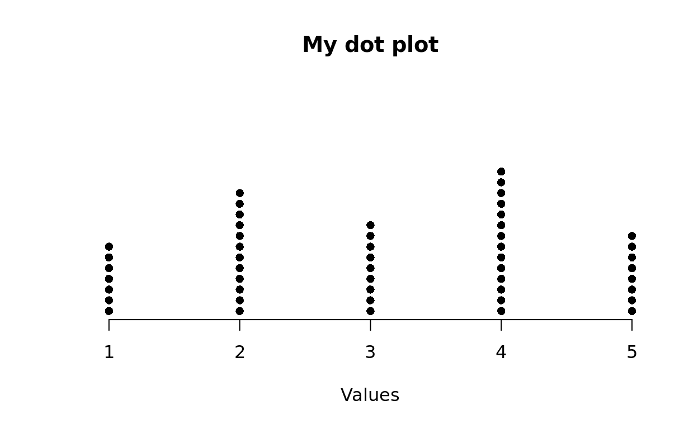
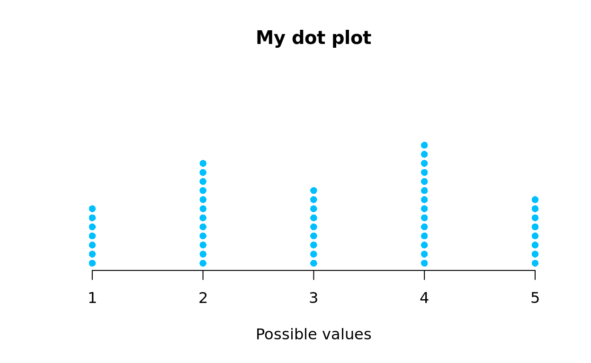

“Line plot. A method of visually displaying a distribution of data values where each data value is shown as a dot or mark above a number line. Also known as a dot plot” — Common Core Mathematics Standards
Let’s create a dot plot for the data set below:
2. Count each value
| Values | Freq |
|---|---|
| 1 | 7 |
| 2 | 12 |
| 3 | 9 |
| 4 | 14 |
| 5 | 8 |
3. Draw a number line and plot based on the frequency table 
CCSS.MATH.CONTENT.6.SP.B.4
Display numerical data in plots on a number line, including dot plots, histograms, and box plots.
CCSS.MATH.CONTENT.HSS.ID.A.1
Represent data with plots on the real number line (dot plots, histograms, and box plots).
## Create a variable `x` to store a set of numeric values
x = c(4, 2, 2, 5, 2, 1, 3, 2, 4, 3, 4, 3, 1, 1, 4, 3, 5, 2, 4, 4, 2, 1, 3, 5, 2, 4, 4, 4, 2, 4, 3, 2, 4, 4, 2, 2, 1, 3, 1, 5, 4, 5, 5, 5, 3, 2, 3, 4, 1, 5)
## Create a dot plot for the values in variable `x`
stripchart( # Call the `stripchart()` function.
x, # Apply the function to variable `x`.
method = "stack") # Stack up points of the same value.### Visualize data on a single variable
## Create a variable `x` to store a set of numeric values
x = c(4, 2, 2, 5, 2, 1, 3, 2, 4, 3, 4, 3, 1, 1, 4, 3, 5, 2, 4, 4, 2, 1, 3, 5, 2, 4, 4, 4, 2, 4, 3, 2, 4, 4, 2, 2, 1, 3, 1, 5, 4, 5, 5, 5, 3, 2, 3, 4, 1, 5) # `c()` combines values inside the parentheses into a vector; `=` assignment operator assign the vector to variable `x`
## Create a dot plot for the values in variable `x`
stripchart( # Call the `stripchart()` function.
x, # Apply the function to variable `x`.
method = "stack", # Stack up points of the same value.
frame.plot = FALSE, # Remove the plot frame.
at = 0, # Position the points at the bottom.
offset = 0.5, # Separate stacking points by 0.5 of point size. TRY 1 or 2.
pch = 16, # Set point symbol as 16-solid circle. TRY 0-square or 8-star.
col = "deepskyblue", # Set point color as deepskyblue. TRY "forestgreen" or "deeppink".
main = "My dot plot", # Create a plot title. TRY your own title.
xlab = "Values") # Label the x-axis. TRY your own label.x = c(4, 2, 2, 5, 2, 1, 3, 2, 4, 3, 4, 3, 1, 1, 4, 3, 5, 2, 4, 4, 2, 1, 3, 5, 2, 4, 4, 4, 2, 4, 3, 2, 4, 4, 2, 2, 1, 3, 1, 5, 4, 5, 5, 5, 3, 2, 3, 4, 1, 5)
stripchart(x, method = "stack", frame.plot = FALSE, at = 0, offset = 0.5, pch = 16, col = "deepskyblue", main = "My dot plot", xlab = "Possible values")
x = c(__ , __ , __)
stripchart(x, method = "stack", frame.plot = FALSE, at = 0, offset = 0.5, pch = __, col = __, main = "__", xlab = "__")### Visualize data on a single variable
## Create a variable `x` to store a set of numeric values
# `c()` combines values inside the parentheses into a vector; `=` assignment operator assign the vector to variable `x`
## Create a dot plot for the values in variable `x`
# Call the `stripchart()` function.
# Apply the function to variable `x`.
# Atack up points of the same value.
# Remove the plot frame.
# Position the points at the bottom.
# Separate stacking points by 0.5 of point size. TRY 1 or 2.
# Set point symbol as 16-solid circle. TRY 0-square or 8-star.
# Set point color as deepskyblue. TRY "forestgreen" or "deeppink".
# Create a plot title. TRY your own title.
# Label the x-axis. TRY your own label.phones = c(2, 2, 3, 3, 2, 4, 4, 5, 4, 5, 5, 5, 6, 4, 4, 4, 4, 5, 5, 6, 4, 3, 3, 4, 3)
stripchart(phones, method = "stack", frame.plot = FALSE, at = 0, offset = 1, pch = 8, col = "red", main = "Number of mobile phones per household", xlab = NULL)beverage = c(2.25, 1.95, 2.25, 2.50, 3.50, 3.50, 4.00, 4.00, 3.25, 3.25, 4.25, 4.75, 2.75, 3.75, 4.75, 4.75, 5.00, 4.00, 5.00, 5.00)
stripchart(beverage, method = "stack", frame.plot = FALSE, at = 0, offset = 1, pch = 4, col = "brown", main = "Prices of beverages at a coffee shop", xlab = NULL)A high school history teacher recorded the test scores for 30 students on a recent exam. The score are listed below:
88, 90, 85, 83, 89, 85, 81, 85, 86, 88, 85, 90, 85, 81, 86, 82, 84, 82, 83, 95, 88, 91, 92, 86, 82, 81, 81, 75, 83, 84
Using the data above, construct a dotplot to better visualize and understand the data.
scores = c(88, 90, 85, 83, 89, 85, 81, 85, 86, 88, 85, 90, 85, 81, 86, 82, 84, 82, 83, 95, 88, 91, 92, 86, 82, 81, 81, 75, 83, 84)
stripchart(scores, method = "stack", frame.plot = FALSE, at = 0, offset = 1, pch = 16, col = "orange", main = "History test scores", xlab = "Scores")